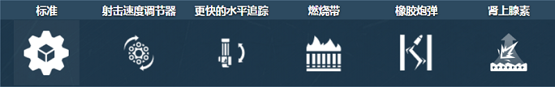
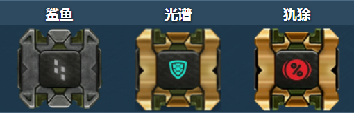
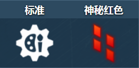
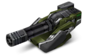
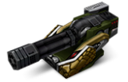
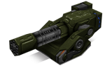
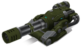

概括
极速炮是第一款真正的基于壳的全自动机枪。
因此，它可以在几乎无限的时间内发射一连串小子弹，有效地处理中远距离的伤害。
然而，这种不确定的射速有一个明显的缺点：
在枪管持续旋转一定时间后，武器将开始导致整个坦克过热，造成与火焰炮的持续燃烧效果平行的累积伤害。
极速炮还具有独一无二的陀螺效应，使炮塔部分独立于底盘的旋转。
这是一把双刃剑：它使极速炮的目标更难击倒，但也使用户更难使用船体辅助瞄准。
车库中的描述
中程反坦克机枪。六个枪管可实现令人难以置信的快速射击。
长时间使用后会过热并自燃。
坦克炮塔很酷，但有时，你想把敌人撕成小块，而不考虑重新装弹等战术上的细微差别。
这里的炮塔是您所有问题的解决方案。
一叠六个枪管，令人难以置信的射击速度，以及带有穿甲弹的自动稳定系统。
无限穿甲弹。如此多的回合，在弹幕期间，不仅您的枪管会过热，而且您的整个坦克都会过热。
您可能想继续射击，但这可能会导致您的坦克着火，这很有趣。
但是你也可以向你的盟友寻求帮助，因为冻结可以让你冷静下来，而且你不必停止疯狂。
高射击速度在精确控制方面有其缺点。吸水稳定器会在射击时减慢转弯速度，以防止炮塔锁定。
装备改造

防御模块

射击效果

皮肤

极速炮标准

极速炮 XT

青春极速跑

极速炮超高